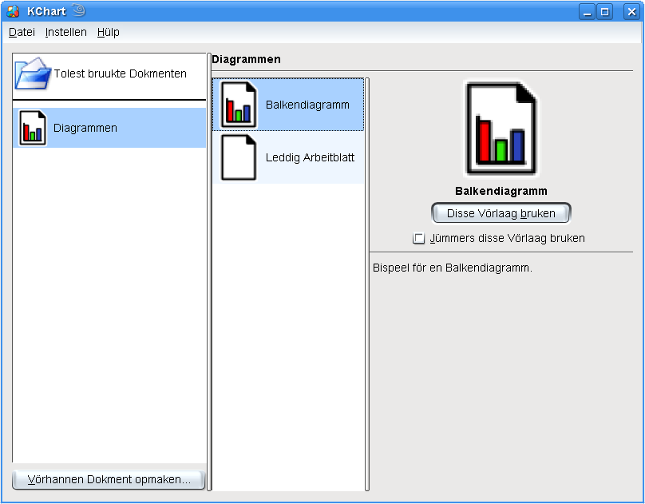
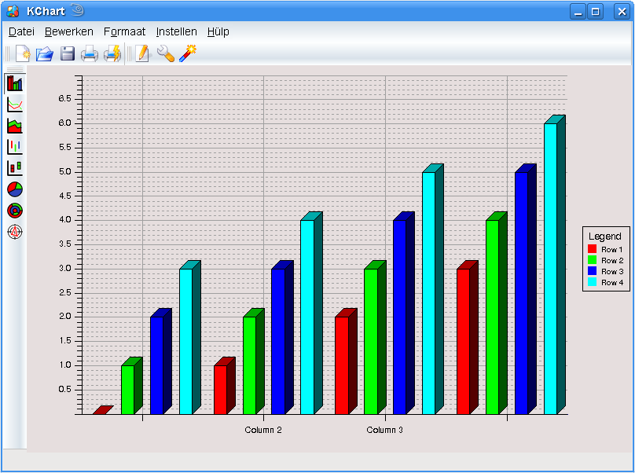

Wi kiekt us en eenfach Bispill an, dormit wi mehr över KChart lehrt. Dorbi warrt ok de Böversiet un ehr Enkelheiten utföhrlich verklort.
Wenn Du KChart as Enkelprogramm utföhrst, warrt de normaal Startdialoog wiest, un Du kannst Di ut en Reeg vun Vörlagen een utsöken, oder en vörhannen Diagrammdokment laden.

KChart lett sik op verscheden Oorden starten. Linkerhand kannst Du de dree Optschonen sehn: Tolest bruukte Dokmenten, Diagrammen-Vörlagen un den Knoop Vörhannen Dokment opmaken.... Mit de eerste Optschoon kannst Du binnen verleden opmaakt Diagrammen stövern un utsöken, mit de twete lett sik ut verscheden Vörlagen en nieg Diagramm opstellen, un de drüdde maakt en Dateidialoog för't Opmaken vun en vörhannen Diagramm op.
Wi fangt eerstmaal mit en Standardvörlag an. Söök toeerst links Diagrammen ut, un denn ut de Vörlagen Balkendiagramm. Normalerwies is disse Vörlaag na Köör vun Diagrammen al vörinstellt.
Wenn Du KChart standardwies jümmers mit de sülve Vörlaag starten wullt, kannst Du ok Jümmers disse Vörlaag bruken anmaken.
Klick op den Knoop op de rechte Siet nerrn de Vörlaag-Vöransicht.

As Du sehn kannst, gifft dat al en poor Bispilldaten. KChart stellt den Standardwarktüüchbalken för't Opstellen vun en niegen Diagramm un för't Sekern, Laden un Drucken vun Diagrammen praat. De twete Warktüüchbalken stellt de Lüttbiller för't Bewerken vun Daten, Diagramminstellen un en Instellen-Hölper praat. Mit de anner Lüttbiller lett sik twüschen de verscheden Diagrammtypen wesseln. Beacht, dat dat för en poor Diagrammtypen ok Ünnertypen gifft.
Dat Menü stellt all Standardindrääg praat, ok Instellen för Tastkombinatschonen, den Warktüüchbalken un dat Siet-Utsehn för't Drucken.
Beacht, dat dat Bewerken vun Daten mit KChart nich verföögbor is, wenn dat binnen KSpread start warrt, wiel all Daten ut de Tabell praatstellt warrt. As Enkelprogramm is de Dateneditor en wichtig Programmdeel.


Wullt Du wat to disse Siet seggen oder ehr verbetern?
Denn stüer Dien Vörslääg to den KDE-Dokmentatschoonkoppel!